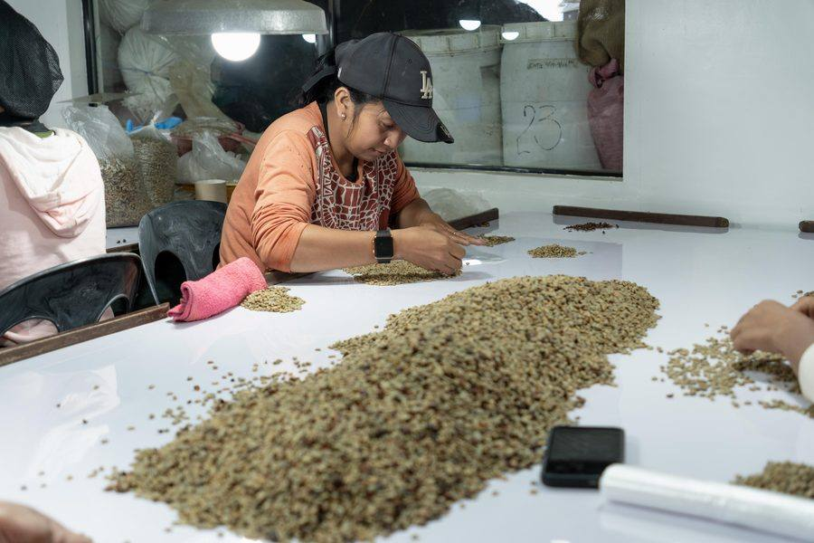

Specialty Coffee
Green Beans & Roasted
Our highland-grown beans are selected at peak ripeness and processed with patience, preserving the complex, clean flavors the Bukidnon terroir imparts. Available as specialty-grade green beans or roasted to order, each lot carries the story of the soil, the elevation, and the hands that tended it.
Explore Coffee